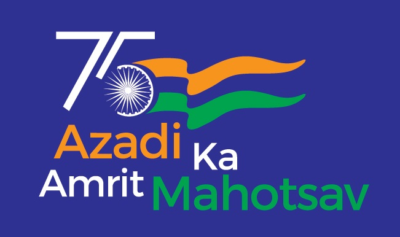
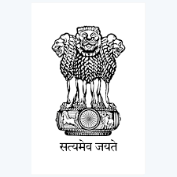
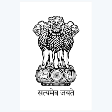
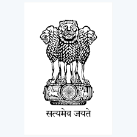

 


The Indian Army is the land-based branch and the largest component of the Indian Armed Forces. The President of
India is the Supreme Commander of the Indian Army, and its professional head is the Chief of Army Staff
(COAS), who is a four-star general. Two officers have been conferred with the rank of field marshal, a five-star
rank, which is a ceremonial position of great honour. The Indian Army originated from the armies of the East
India Company, which eventually became the British Indian Army, and the armies of the princely states, which
were merged into the national army after independence. The units and regiments of the Indian Army have diverse
histories and have participated in a number of battles and campaigns around the world, earning many battle and
theatre honours before and after Independence.
The primary mission of the Indian Army is to ensure national security and national unity, to defend the nation
from external aggression and internal threats, and to maintain peace and security within its borders. It
conducts humanitarian rescue operations during natural calamities and other disturbances, such as Operation
Surya Hope, and can also be requisitioned by the government to cope with internal threats. It is a major
component of national power, alongside the Indian Navy and the Indian Air Force. The army has been involved
in four wars with neighbouring Pakistan and one with China. Other major operations undertaken by the army
include Operation Vijay, Operation Meghdoot, and Operation Cactus. The army has conducted large peace time
exercises such as Operation Brasstacks and Exercise Shoorveer, and it has also been an active participant in
numerous United Nations peacekeeping missions, including those in Cyprus, Lebanon, Congo, Angola, Cambodia,
Vietnam, Namibia, El Salvador, Liberia, Mozambique, South Sudan, and Somalia.
The Indian Army is operationally and geographically divided into seven commands, with the basic field formation
being a division. Below the division level are permanent regiments that are responsible for their own recruiting
and training. The army is an all-volunteer force and comprises more than 80% of the country's active defence
personnel. It is the largest standing army in the world, with 1,237,117 active troops and 960,000 reserve
troops. The army has embarked on an infantry modernisation program known as Futuristic Infantry Soldier
As a System (F-INSAS), and is also upgrading and acquiring new assets for its armoured, artillery, and aviation
branches